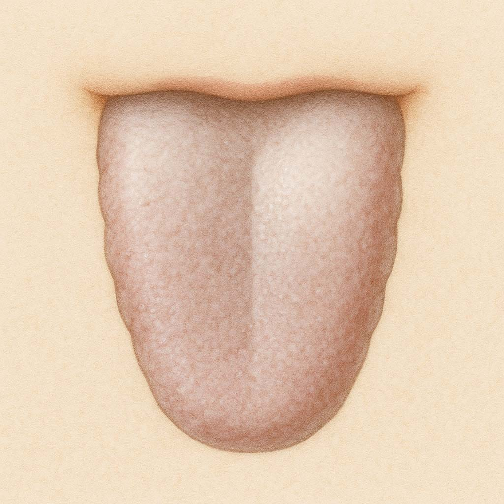

陽虚タイプ
体質 陽虚タイプ
エネルギー不足の冷え体質「陽虚タイプ」
天生的虚冷体質
夏でも冷えるといった陽虚タイプ、陽気が不足しており熱を生み出せず、からだの内側から冷えやすい。
体質の説明、主な特徴
生まれつきパワーの少ないタイプ。熱を作れないので寒がり、冷え症。
『先天の気』を蓄える『腎』が弱く、成長、発育、生殖などにトラブルが起こりやすい。
色白。軟便、尿量多い（夜間尿）。生理周期遅れる傾向で生理痛も多い。
冷えると足がだるくなり、むくみ、関節が痛くなる。温かいものを好む。
温めると楽になる。お風呂も長く使っているのが好き。
なりやすい不調・病態（からだとこころ）
無月経、希発月経などの生理異常、無精子症、インポテンツ、不妊症など生殖機能低下。
前立腺肥大、慢性腎炎、頻尿、夜尿症、失禁など泌尿機能瘀低下、
下痢・便秘、難聴、耳鳴り、めまい、老眼、白内障、脱毛、冷え症、
むくみ、甲状腺機能低下、鼻炎、
各部ヘルニア、股関節脱臼、腰痛、骨粗鬆、関節リウマチ。
アルツハイマーや認知症などの中枢神経障害や遺伝、免疫系のトラブルも起こりやすい。
舌の特徴（正常との比較）
正常な舌（画像）

陽虚の舌（画像）
他の体質との関連
「脾虚」も「陽虚」と同じ「気」が不足している「気虚体質」。（脾腎陽虚証）
「湿痰」にもなりやすい。
「陰虚」の特徴も合わせ持つ。（陰陽両虚証）
養生ポイント
過労や体を冷やすことが原因。先天性や誕生時の異常が原因も。
両親からのエネルギー（先天の気）が少ないので、無駄遣いは避け、後天の気を増やすこと。
「熱」を失わず、『腎』の負担を減らし、『脾』を守り強くする。
未病先防…１
冷えを防ぎ、内側の「熱」を守る事が大切。薄着をせず、衣服でカラダの中の「熱」を守りましょう。
冷たいものの飲みすぎ食べすぎは、「熱」を奪います。
ビールや牛乳や生もの（魚・野菜・果物）はカラダを冷やすので要注意です。
手で触って冷たく感じるものや、体を冷やす涼・寒性の食べ物は口にしない。
未病先防…２
睡眠時間をきっちり確保することが大切です。
肉体疲労や精神の酷使は『腎』を消耗させます。
使わないというより、使った後に充分休養して回復させ、疲れを翌日に持ち越さないことです。
セックス過多や病気や手術後も注意が必要です。
既病防変
じんわり汗をかくぐらいに運動をしたり、ちょこまか動くこと！
カラダを動かすと体内で「熱」が発生し循環します。
また食物を分解するときに「熱」を発生するので、食べることも大切ですが、ムリに食べると脾（胃腸）を傷めるので少しお腹を空かせる事がポイントです。
太腿や腹筋など大きな筋力をアップして基礎代謝や体温を高めましょう。
経絡/ヨガ/運動処方
腎経、心経、心包経。
はじめはゆるめの運動から始めて、最後は筋力アップ。
ゆっくりスクワット、腹筋、背筋
開脚、上体そらし、腕振り体操。
効果的なツボ=腎兪、脾兪、三陰交、太谿、復留、照海など。
効果的なヨガ＝ウールドヴァムカシュヴァーナアサナ（上向き犬）、ダヌラアサナ（弓）
薬膳施治
温補腎陽（おんほじんよう）
体を温め腎の働きを高める。
おすすめの食材
羊肉、鶏肉、エビ、なまこ、にら、からし菜、唐辛子、生姜、にんにく、なた豆、栗、くるみなど。
体を温めるもの。
温かいもの。
夏場の冷たい料理には、生姜、ネギ、みょうが、わさび、からしなど温性の薬味たっぷりで。
ただし食材には温・熱・平・涼・寒の五つの性質があります。
今の自分の体質をチェックし、寒熱虚実の傾きを把握したうえで、そのバランスを中庸に整えてくれる食材をとるようにしましょう。
良いと言われる物でもそればっかり摂り過ぎるのは良くありません。
おすすめ商品（カテゴリーリンクで対応）
- なつめ薬膳茶
- 枸杞とバラ 養眠茶
- からだを温める黒のお茶
- なつめと生姜のチャイ
- 肝腎かなめ茶
- 健やか茶
- なつめ
- クコの実
- 黒きくらげ
- 竜眼
- マイカイ花
- かぼちゃの種
- 薬膳火鍋紅白セット
- 手足氷凍鍋セット
- 四物湯スープセット
- 食べる薬膳茶（桂棗黒豆茶）
- からだポカポカあたため乃湯
注意するもの
瓜類（かぼちゃ以外）、ナス、セロリ、緑茶、冷たい豆腐など寒・涼性のものは避けましょう。
摂ると良い四気・五味・帰経食材
性：温性・熱性 味：甘味・辛味 帰経：心・脾・腎・小腸・胃・膀胱
国際中医師からのアドバイス
過労や心労に気をつけエネルギーの無駄遣いをしないように。
常に腎陽を補い、脾を健やかに保つように心掛けましょう。
お腹を空かせてしっかり食べることも効果的。
しんどくなければ椅子に座ってのスクワットや壁に向かって腕立て伏せなど筋力アップも目指しましょう。
お腹を空かせてしっかり食べること、筋力アップを目指した軽い運動もおすすめです。